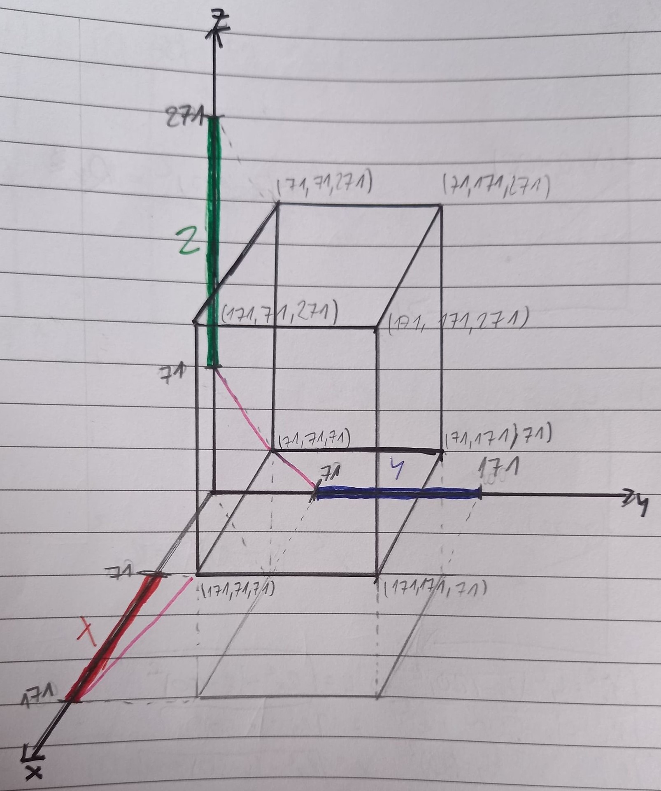
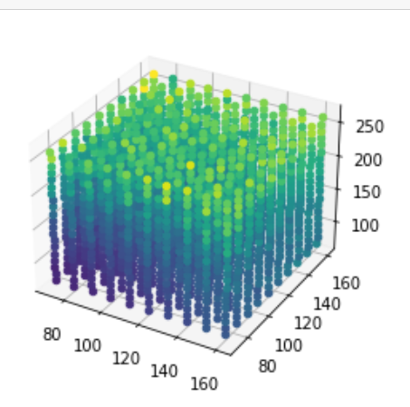

Magnetic Field Localization
About project
This program is a part of a Master’s Thesis concerning Magnetic Field Localization in the Human body.
Test scenario
To test the possibility of using a magnetic field to locate sensors, a special scenario was created. Visualization is in the picture below.
Let’s assume a 3d Cartesian coordinate system. In the model, three rectilinear cords generate a magnetic field: green on the Z axis, blue on the Y axis, and red on the X axis. Sensors are evenly spaced in a cuboidal space simulating the human body.
Each sensor measures the magnetic flux for each magnet (with added noise).
In the test scenario, all measurements are calculated simultaneously. However, it is assumed that magnets are powered sequentially.
Parameters
In this section, there are parameters used in the test simulation.
Current [I] = 135 kA
Magnetic flux [M] = 27 T
Magnetometer sensitivity = 0,22 V/T
Note
For this version, sensor parameters are based on:
M. Banjevic, B. Furrer and R. S. Popovic, “2D CMOS integrated magnetometer based on the miniaturized circular vertical Hall device,” TRANSDUCERS 2009 - 2009 International Solid-State Sensors, Actuators and Microsystems Conference, 2009, pp. 877-880, DOI: 10.1109/SENSOR.2009.5285857.
In the future, there is a plan to use more accurate sensors for simulations.
Results
For each sensor, ten measurements were carried out and the mean position errors were calculated.
The directional error is a difference between calculated and measured flux for each magnet. A total position error is a length of a vector composed of directional errors.
Sensor positions are depicted below. Their colours reflect total position errors. The brighter the colour is, the bigger the error. Maximal calculated error equals 9,7 cm.
